トップページ 4回目（3D版 STORY の場面の候補）
上が「全体の雰囲気」の候補、下が「節ごと」の候補です。画像を押すと実物が開きます（PC は1画面目と全体、右の細い列はスマホ）。文言はすべて今のサイトの原文のままです。
ロゴの別案 13案
アート系の会社・スタジオ・美術館などのロゴの型から作った13案。黒いヘッダー・紙の地・単体の3通りで並べた。11・12は動く案。
採用ページ：海（3D）を節と一体にした案
本番（E を詰めた版）と同じ本文・長さで、背景を3Dの海（夕日→ブルーアワー→月夜）に。節の形が海の上に浮かぶ。
H 3Dの海×節（候補B を本番と同じ詰めた構成に）
開く ↗背景は候補B の3Dの海面（シェーダー：日没の光の道→ブルーアワー→月と月明かりの道）。本文・並び・長さは本番 recruit.html と同じ（1節＝1画面・左に文字・右の舞台枠）。節ごとの形（仲間の輪郭・パイとプラス・5つの価値の形・沈む夕日と灯り・波紋/矢印/上がる線・7つの灯・ペン先の星座）は、海の上に浮かぶ粒として現れ、水面に揺れながら映り込む。+VALUE と求める人間像は1画面のまま、語にかざす／順に形が切り替わる。写真は粒にせずそのまま並べる。
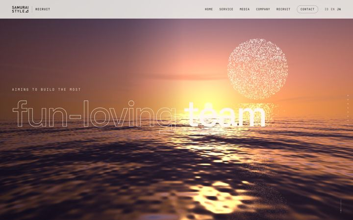
参考にしたサイト
- recruit-b（3Dの海） 海面のシェーダーをそのまま（向きと水平線の高さだけ変更）
- recruit.html（本番 v2） 本文の構成・節の形・切り替えの仕組みを共通化
FV（ファーストビュー）＋場面1へのつなぎ：別の見せ方3案
本線は今「粒が飛んでくる→3語がそろう→波紋→宇宙へ」。それとは別の型。場面1の宇宙は簡易版。
同調する一本の波
開く ↗真っ黒に、ノイズの波形（オシロの細い線）が何十本も震えている。3語は最初から1列にあるが、電波が合っていないように揺れて二重にぶれ、ぼやけて読みにくい。スクロール＝つまみを回す：find → the → signal. の順に像が合い（合うたびに小さな音）、震える線が1本に寄って澄んだ水色の正弦波になる。3語がそろった瞬間に澄んだ2音＋低いふくらみ。音は砂嵐の雑音が同調で細い正弦波に変わる。つなぎ：波が平らな1本の線になり、その線が奥側から倒れ込んで宇宙の奥行きになる。倒れながら水色→朱に変わり、闇から岩と塵が明け、朱の線がそのまま場面1の奥へ伸びる（見つけたシグナルが、そのまま進む道になる）。
参考にしたサイト
ノイズの文字の海
開く ↗真っ黒な画面いっぱいに、小さな等幅の英単語（trend / buzz / viral / hype …＝一時的なノイズ）が何十列も左右に流れ、カチカチと細かい音。スクロールすると流れが止まり（3語の列だけスロットの絵柄のように目当ての位置で止まる）、その中に混ざっていた find・the・signal. だけが順に光る（光るたびに1音）。光った3語が文字の海から浮き上がって大きくなり、中央で1列にそろう瞬間に澄んだ2音。周りのノイズの文字は暗く沈む。つなぎ：残ったノイズの文字が1文字ずつほどけて奥行きの中へ散り、手前を流れ過ぎながらそのまま宇宙の塵になる（上がる風の音）。闇から岩が明け、朱の線が奥へ伸びて場面1の文が出る。
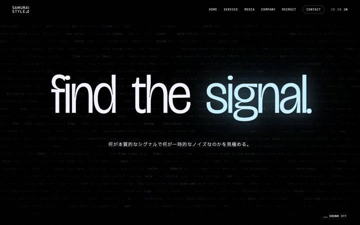
参考にしたサイト
ピント送り
開く ↗真っ黒に、ピントの合っていない光の玉（ボケ）がいくつも浮かび、3語も同じようにぼけて読めない（signal. だけ水色のにじみ）。スクロール＝レンズのピントリングを回す（カチカチという手応えの音）：光の玉が縮んで小さな星になり、find → the → signal. の順にピントが合って文字がくっきり立つ。3語がそろった瞬間に澄んだ2音。見極める＝ピントを合わせる、の比喩。つなぎ：ピントをさらに奥へ送る（ラックフォーカス）。3語は手前のボケになって溶け、奥の闇でぼやけていた岩にピントが来て、朱の線が奥へ伸び、そのまま場面1の空間になる（下がる風の音）。
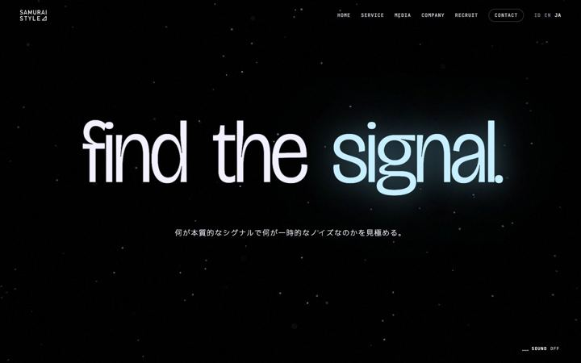
参考にしたサイト
採用ページ：背景の粒が節ごとに形を変えて、その節の中身を見せる3案
D（粒の夕日）が土台。E＝左に文字・右の舞台で粒が組み変わる／F＝3Dの海を進み節ごとに物が浮かぶ／G＝粒が画面いっぱいの絵になる。
E 節ごとの舞台（左に文字・右で粒が形になる）
開く ↗D の粒の夕日を土台に、画面の中ほどに来た塊ごとに、右の舞台で粒がその意味の形に組み変わる。FV＝粒の夕日と水面の反射／私たちは＝浜に並ぶ仲間の輪郭（環境動画の夕景の人影から抜き出した線）／CORE VALUE＝パイ（円）にプラスが開く／+VALUE＝5つの灯→Fun はじける放射・Free ほどけて群れで飛んでいく・Flat 水平線に1列・Open 口を開けて回る輪・Optimization 1つの格子にそろう／写真の節（私たち・価値観の2枚・9枚・意義の1枚）＝粒がその写真の色と形に集まり、そのあと本物の写真が現れる／楽しく働くことの意義＝夕日が沈む→結びの一文で水平線に灯りがともる／求める人間像＝3つの灯→共鳴の波紋・前へ進む矢印・いったん沈んでから上がる線／MEMBER＝7つの灯→1人ずつ粒が肖像を描いて写真に／JOB TYPE＝ペン先の星座／フッター＝夜空。カーソル（スマホは指）を近づけると粒がそっと避ける。文字は左の柱で、後ろを暗くしている（スマホは上が舞台・下が文字で、文字の後ろの粒を薄くする）。
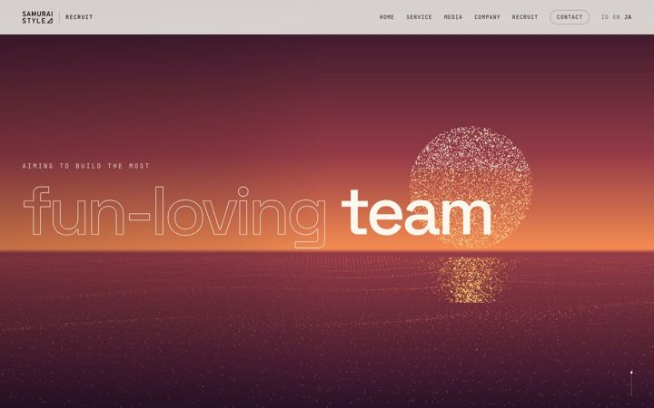
参考にしたサイト
- トップの STORY（c-3d-b2.html・3d/b/） 背景が場面そのものになり、節が変わると絵が変わる考え方
- recruit-d（粒の夕日） 粒の海・空の色・FV を土台にした
F 海の上に現れる（3D の旅）
開く ↗夕日の海を3Dで進む。節ごとに、海の上へ粒の「物」が水の下から浮かび上がって形になり、次の節へ進むとカメラが海の上を次の物まで進む（トップの STORY と同じ一方向の旅）。通り過ぎた物は火の粉のようにほどけて昇る。形は E と同じ意味のもの（仲間の輪郭・パイとプラス・5つの価値の形・ペン先の星座 など）。写真の節は、粒が集まった所に本物の写真の板が海の上に立つ。読み進めるほど太陽が沈み、星が出る。マウスでカメラがわずかに揺れる。文字は左の柱（スマホは下）。
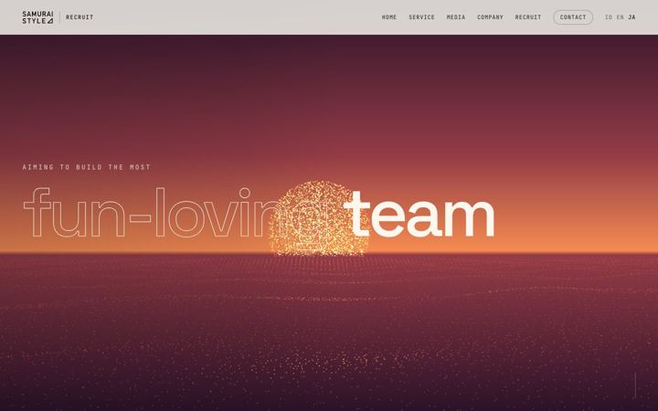
参考にしたサイト
- トップの STORY（c-3d-b2.html・3d/b/main2.js） 1スクロールで次の場面へ進む一方向の旅・粒の質感
G 全面の粒（画面いっぱいが絵になり、文字は下の帯）
開く ↗粒が画面いっぱいの絵になる型。写真の節は、粒が全画面の写真の網点になってから本物の写真が全面に現れる（映画のカットのように切り替わる）。形の節（仲間の輪郭・パイとプラス・5つの価値の形・灯り・波紋・星座）は画面の上の大きな舞台で組み変わる。MEMBER は1人ずつ、画面の上に粒で肖像が描かれる。文字はすべて画面下の帯に置き、帯の後ろの粒を薄くして必ず読めるようにした。カーソル／指で粒が避ける。
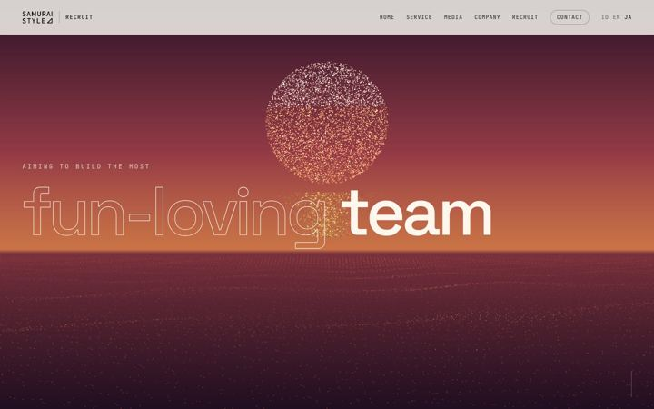
参考にしたサイト
- トップの メンバー（製図の網点→くっきり） 網点から写真がくっきり現れる見せ方
採用ページ（夕焼け→夜）の追加4案
今の仮ページ（p/recruit.html）とは別の型。ヘッダーは全ページ共通・ロゴの右に RECRUIT。
A 灯り（5つの電球が1つずつ灯る）
開く ↗今の環境動画の夕景のカット（浜の人影）を全面に、その上に Blender で作った5つの裸電球がシルエットで吊られている。読み進めるほど空が紺に沈み星が出て、+VALUE は画面を止めて Fun / Free / Flat / Open / Optimization の1語ごとに電球が1つずつ瞬いて灯る（フィラメントの揺らぎつき）。通り過ぎた後は5つとも点いたまま夜の本文を照らす。文字は細いセリフ（Cormorant Garamond）と明朝、本文は左の柱に寄せて灯りを右に残す。前回の r2 の灯りを磨いた版：電球は透過シルエットに作り直して夕焼けの上でも成立させ、ランタンはやめて電球だけに絞った。
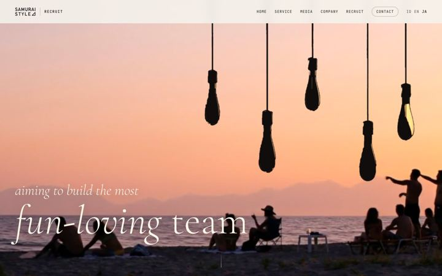
参考にしたサイト
- pages7/recruit/r2.html（前回のランプ案） Blender の電球5つの描画層（灯りごとの層）を流用。暗い背景の層から透過シルエットを作り直した
- 環境動画（夕景のカット） FV の背景。スクロールで明るさと彩度を落とし夜へ
B 海（3Dの海面が日没→月夜へ）
開く ↗画面全体が WebGL の海面（シェーダーで波・反射・きらめきを計算）。開いた時は太陽が水平線に触れた日没で、海に光の道が伸びる。読み進めるほど太陽が沈み、空がブルーアワーの群青になり、雲の下の橙が消え、最後は星と月、月明かりの道の夜の海になる。見出しはトップと同じ Roboto Flex の「細く縮んだ字→広く太く」、本文は12分割の右の柱。写真は海の上に浮かぶ面として置く。
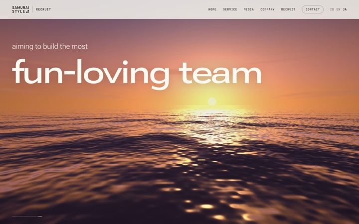
参考にしたサイト
- トップの3D（full/site/3d/b/main2.js） three.js 0.160 の読み込み方・SP で解像度を落とす作り・見出しの伸び方を合わせた
C 実写の夕景（同じ屋上プールが暮れていく）
開く ↗海辺の街を見下ろす屋上のインフィニティプールの写真1枚が、読み進めるほど 日没 → ブルーアワー → 夜（街の灯り・月の道・プールの照明）に暮れていく。3枚は ChatGPT で同じ構図のまま時刻だけ変えて生成し、水平線とプールの縁の位置を測って重ねた。ゆっくり寄り続け、細かいフィルムの粒子をかける。文字は Inter Tight の極細の大きな英字を中央に、本文は中央の柱。人物は入れていない（メンバーの写真は本文側にそのまま）。
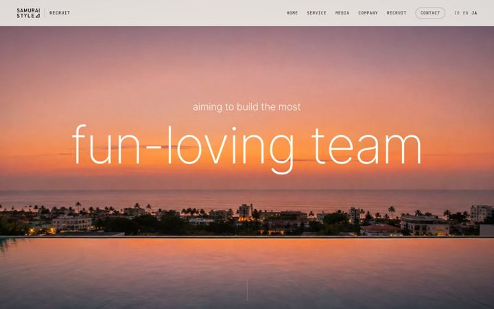
参考にしたサイト
- メンバー写真（g2 海の見えるテラス・g9 プールサイド・g3 高層階から見た海辺の街） 生成画像の場所（海辺の街の高層階のプール）をメンバーの実際の写真に寄せた
D 粒の夕日（トップと同じ粒で、太陽が沈み星が出る）
開く ↗トップの3Dと同じ「粒」の表現で、奥へ伸びる海面の粒の格子・粒でできた太陽・星を描く。開いた時は粒の太陽が水平線の上にあり、海の粒が光の道を作る。読み進めるほど太陽が沈んで粒が消え、海の粒は夜の青に冷え、星の粒が瞬き始め、最後は月明かりの道。FV は水平線の上に大きな英字（fun-loving は輪郭線だけ、太陽が透けて見える）。+VALUE は輪郭だけの語が画面の中ほどで塗られる。
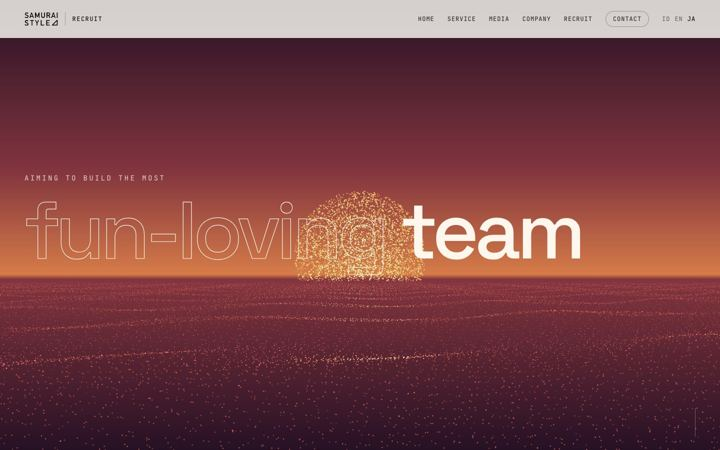
参考にしたサイト
- トップの3D（full/site/3d/b/main2.js） 粒（Points・加算合成）の質感と、ほぼ黒の夜への落とし方を合わせた
media の記事サムネイル（今のトーンに合わせた3案）
各ページの上は一覧のカードに入れた時、下は7枚を大きく。
製図の線画で描く図解
開く ↗今の青い3D空間のカバーをやめ、記事の中心の考え方（3層ピラミッド・ROI＝Return/Investment・縦に降りる探索と上がる問い・定量×定性×時間軸・マクロ→ミクロ・光と影・V字）を方眼の地に墨の細線で1枚の図にした。画面に入ると線が引かれ、描き終わると図の一部だけがゆっくり動く。朱は各図に1点。
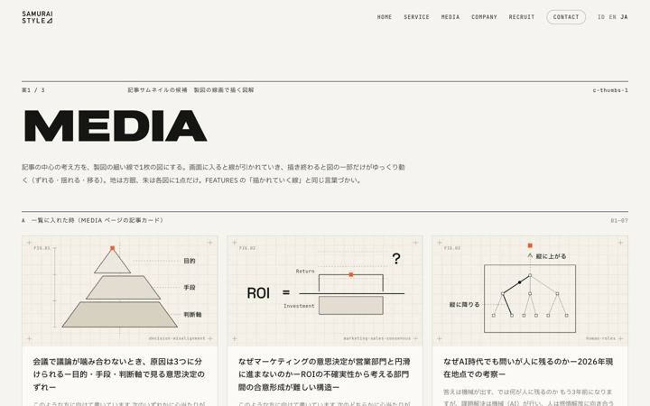
参考にしたサイト
- Linear（Now） 記事ごとに、記事の中身を表す細い線の図を1枚置くサムネイルの作り方（bench/linear-blog）
- samurai-style トップ FEATURES（top-v2.html） 画面に入ると製図の線が描かれていく動き・朱の小さな四角1点
活版の文字組みの表紙
開く ↗絵を使わず、題名そのもの（「ー」より前の主題）を縦組みの明朝で大きく組み、副題を横組みで小さく、新聞の二重罫と縦罫で区切った。朱は題名の中の一語だけ。画面に入ると罫が引かれ、行が1行ずつ現れ、以降は動かない。文字は原文どおり（改行位置だけ決めた）。
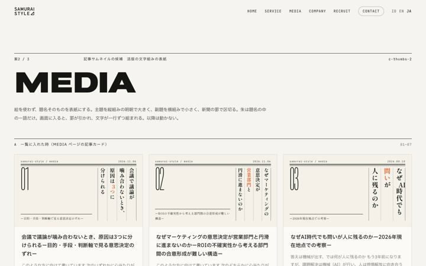
参考にしたサイト
- Pentagram（News） 写真を使わず文字組みだけで一覧のサムネイルを作るやり方（bench/pentagram-news）
- samurai-style ページ見出し giant 細く縦長の Roboto Flex の数字（通し番号）
生成りの地に朱1点の幾何
開く ↗文字も説明の線も無しに、記事の構造を墨・灰・生成りの大きな面（帯・丸・十字・同心円・塔・V）に置き換えた。形は画面の端で切れ、朱の丸が1つだけ。14〜24秒の周期でゆっくり動き続ける（ずれて揃う・膨らみ縮む・昇る・渡る）。
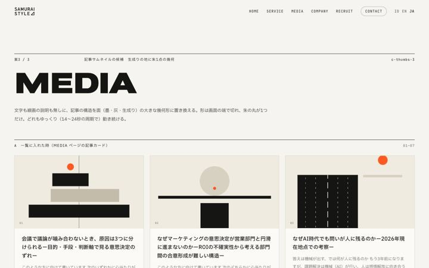
参考にしたサイト
- samurai-style MEDIA ピラミッド図（c-media-1.html） 段ごとの生成り〜灰の面の色（#ece8de/#e2ddd0/#d7d1c2）
会社ページ VALUES：FUN が主役＋Free・Flat・Open・Optimization を 2×2
各語に製図の動く絵（FUN が最初に描かれる）。文言は原文のまま。
VALUES 案1：主役の大札＋2×2
開く ↗FUN を横長の大きな札（絵が左に大きく・語が右に大きく）で1段目に、下に Free/Flat/Open/Optimization を FEATURES と同じ札で 2×2。スマホも 2×2 を保つ。5つの絵は共通（p/_values.js）。FUN＝スピログラフ（歯車が輪の内側を転がり10枚の花びらを描く・描き終えても歯車がゆっくり回る）／Free＝点線の枠（場所・時間の囲い）の口から1本の線が出て外を自由に伸び、先が揺れ続ける／Flat＝高さの違う7本の柱が同じ高さにそろい、水準器の泡が真ん中へ／Open＝立ち上がった4枚の壁（箱）が外へ倒れて1枚の展開図になる／Optimization＝山と谷の線に部分最適の谷の印、上から水平線が下りて全体でいちばん低い谷に朱の点。画面に入ると FUN から描き、1.5秒後から残り4つを順に。朱は各絵1点だけ・かざしても反応なし。文言は公式 /company の VALUES 原文のまま。
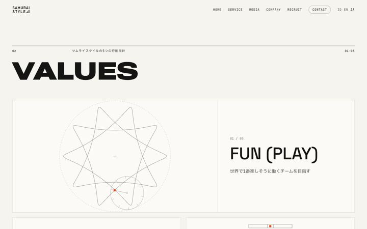
参考にしたサイト
- c-3d-b2.html の FEATURES 札の作り（card地・細線・01 / 04 の番号・語の級数）、描き進みの関数 D と朱の小さな四角1点の決まり
- samurai-style.tokyo/company（VALUES） 5つの語と説明文（原文）
- svc-real.js の製図の枠 案3の製図台の方眼（80px＋16px の2段の格子）
VALUES 案2：中央に FUN・四隅に4つ
開く ↗3列の中央列を FUN が縦2段ぶち抜き（枠だけ墨の線で強く）、左右に Free・Flat／Open・Optimization の札。スマホは Free・Flat → FUN → Open・Optimization の順で FUN を4つが挟む。5つの絵は共通（p/_values.js）。FUN＝スピログラフ（歯車が輪の内側を転がり10枚の花びらを描く・描き終えても歯車がゆっくり回る）／Free＝点線の枠（場所・時間の囲い）の口から1本の線が出て外を自由に伸び、先が揺れ続ける／Flat＝高さの違う7本の柱が同じ高さにそろい、水準器の泡が真ん中へ／Open＝立ち上がった4枚の壁（箱）が外へ倒れて1枚の展開図になる／Optimization＝山と谷の線に部分最適の谷の印、上から水平線が下りて全体でいちばん低い谷に朱の点。画面に入ると FUN から描き、1.5秒後から残り4つを順に。朱は各絵1点だけ・かざしても反応なし。文言は公式 /company の VALUES 原文のまま。
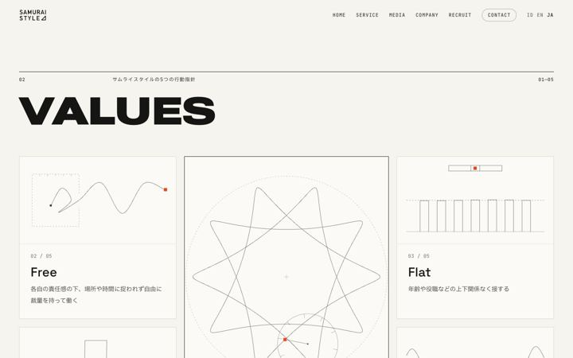
参考にしたサイト
- c-3d-b2.html の FEATURES 札の作り（card地・細線・01 / 04 の番号・語の級数）、描き進みの関数 D と朱の小さな四角1点の決まり
- samurai-style.tokyo/company（VALUES） 5つの語と説明文（原文）
- svc-real.js の製図の枠 案3の製図台の方眼（80px＋16px の2段の格子）
VALUES 案3：一枚の製図台・交点に FUN
開く ↗札に分けず、方眼の1枚の製図台を墨の十字で 2×2 に区切り、その交点に FUN の円を置く（4つが FUN を中心に回る形）。語と説明は各区画の外側の角。スマホは円が上、下に 2×2 の区画。5つの絵は共通（p/_values.js）。FUN＝スピログラフ（歯車が輪の内側を転がり10枚の花びらを描く・描き終えても歯車がゆっくり回る）／Free＝点線の枠（場所・時間の囲い）の口から1本の線が出て外を自由に伸び、先が揺れ続ける／Flat＝高さの違う7本の柱が同じ高さにそろい、水準器の泡が真ん中へ／Open＝立ち上がった4枚の壁（箱）が外へ倒れて1枚の展開図になる／Optimization＝山と谷の線に部分最適の谷の印、上から水平線が下りて全体でいちばん低い谷に朱の点。画面に入ると FUN から描き、1.5秒後から残り4つを順に。朱は各絵1点だけ・かざしても反応なし。文言は公式 /company の VALUES 原文のまま。
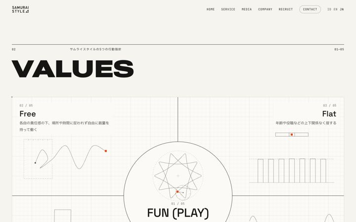
参考にしたサイト
- c-3d-b2.html の FEATURES 札の作り（card地・細線・01 / 04 の番号・語の級数）、描き進みの関数 D と朱の小さな四角1点の決まり
- samurai-style.tokyo/company（VALUES） 5つの語と説明文（原文）
- svc-real.js の製図の枠 案3の製図台の方眼（80px＋16px の2段の格子）
STORY 場面1：人の営みが AI に置き換わる（別案）
本線は今「大勢の人が奥から波のように一気に AI に変わる」。それとは別の発想の3案。
窓の灯りが入れ替わる街
開く ↗夜の街の窓に、机に向かう人の影（あたたかい灯り・それぞれ勝手に揺れる）。ひと窓ずつ AI の影（角ばった頭・目に一本の光・冷たい光・全員同じ拍で明滅）に置き換わる。最初はぽつり、だんだん加速して街じゅうへ（数は時間の3乗で増える）。カメラは一棟の正面から引いて街全体へ。最後に人のままの窓がひとつだけ朱く残る＝人間らしさを保つ問い。音は窓が変わるたびに小さな「ピッ」、部屋のこもった音が細い持続音に変わる。
参考にしたサイト
ひとりの輪郭が組み替わる
開く ↗闇に立つひとりの人の大写し（あたたかい肌と服・かすかに呼吸）。頭の上から冷たい一本の線が降り、線が通った所から表面が粒になってほどけ、同じ姿勢の AI（黒い金属・目に一本の光）に組み替わる。先に頭（考えること）、次に手と体（実行すること）。寄りから始め、終わりに全身まで引く。people.glb の Human_A / Robot_A を使用。音は人の息づかい→さらさら→低い持続音。
参考にしたサイト
手渡しの列が速くなる
開く ↗横一列に並んだ人が、朱い灯り（＝誰かの役に立つ営み）を隣へ一つずつ手渡す。人は受け取って少し抱え、ふわりと渡す。列の人が一人ずつ AI に置き換わり、AI の所では灯りは止まらず一瞬で通り抜ける。置き換わるほど灯りの数と速さが増え、最後は列全体を一本の朱い光の流れが走る（本線の線につながる）。音は人の手渡しでやわらかい音、AI では細い「チッ」。
参考にしたサイト
STORY 場面2「無数の“もっともらしさ”／エントロピー増大」
3D・真っ暗の中で。型の違う3案。
拡散する格子
開く ↗正確に並んだ点の格子（＝ひとつの正解）が、一角から溶けて流れに引き伸ばされ、分裂して1→8倍に数を増やしながら闇へ散る。1コマの中に「まだ整った側」と「崩れていく側」が並び、中心の朱の一点は増えた灰色の点に紛れて消える。右下に状態の数と S=k·ln W。


参考にしたサイト
乱れる煙の輪
開く ↗闇に浮かぶ細く整った1本の煙の輪。スクロールで乱流が強まり、輪がほどけ、渦が渦を生んで画面いっぱいへ手に負えなく広がる。輪の中心の朱の一点は煙に呑まれていく。粒でも線でもなく、体積（煙）で見せる型。

参考にしたサイト
砕け続ける立方体
開く ↗継ぎ目のない黒い立方体（＝ひとつの正解）が一角から割れ、塊はさらに小片へ、小片は塵へと、砕けるたびに数を増やして闇へ散る。割れ目の奥に朱の光が一瞬のぞき、やがて紛れる。硬い立体の質感で見せる型。音はオンで割れる数だけ鳴る。

参考にしたサイト
STORY 場面4（ボタン）：「空に届く合図」を土台に、問いを中央・ボタンで次へ
押す → 集まる → 打ち上がる → 上空に届いて波紋 → 次の場面へ。スクロールでも同じ流れ。
芯を押す（決定・部品版）
開く ↗本線用の部品 3d/b/sc4.js をそのまま使う単体確認ページ。問い（原文そのまま・番号なし）を画面中央、その下の芯の位置に丸い PRESS ボタン（芯の3D位置を毎フレーム画面に投影して追従）。文字は初期の版（top-v2）と同じ動き：Noise は N・o・i・s・e が1文字ずつ Roboto Flex の幅・太さ・傾きを変えながら揺れ・にじむ。Signal は押すまで白、押した瞬間に朱へ灯る。押す → 問いがフェードアウト → ノイズの粒が芯へ集まる → 光の柱が打ち上がる → 上空のノイズの層に届いて朱い波紋 → onNext（本線では場面5へ送る。このページでは画面が上へ流れて場面5の頭が入る）。見上げなしで芯〜層が収まる大きさ。音：触れる＝やわらかく上がる音と息、押す＝カチッ＋小さな一撃、集まるうなり → 打ち上げ（低い一撃＋上へ抜ける風切り＋短い鐘）→ 層に届く（遠い鐘2音）→ 次へ（下へ抜ける空気）。
参考にしたサイト
長押しで溜める
開く ↗土台＝案G。問いの下に横長のボタン「長押しで見極める」（PRESS & HOLD）。押している間だけノイズが集まり、ボタンの中が朱く満ちていく（約1.4秒・途中で離すとほどけて戻る）。満ちきった瞬間、粒も音も止まって芯が小さな点に縮み、一度だけ脈打つ→打ち上がる→上空の層に届いて波紋→画面が上へ流れて場面5へ。見極めには『溜め』が要る、を手で感じさせる案。音：押している間は集まるうなりと刻みがだんだん速くなる→満ちると無音→鼓動1つ→打ち上げ→上空で鐘。途中で離すと下がる息の音。スクロールで進んだ時は溜めを飛ばして打ち上がる。
参考にしたサイト
NoiseからSignalへ切り替える
開く ↗土台＝案G。問いの下に NOISE ←→ SIGNAL の切り替えスイッチ（SWITCH TO SIGNAL）。触れる：つまみが少しSIGNAL側へ寄る。切り替える：つまみが朱く灯ってSIGNAL側へ渡り、ノイズが芯へ集まって打ち上がる→上空の層に届いて波紋→スイッチは消え、画面が上へ流れて場面5へ。問いの言葉（Signal と Noise）をそのまま操作にした案。音：触れる＝ざわつき（ぱちぱち）が一瞬強まる、切り替える＝押し込みと戻りの2つのカチッ、その後は案Gと同じ（集まるうなり→打ち上げ→上空で鐘→次へ）。スクロールしても同じ流れで進む。
参考にしたサイト
STORY 場面4（新）：初期の案「集まって打ち上がる」を土台にした3案
いちばん上が最新。本線には今、初期の案そのものが入っています。
空に届く合図
開く ↗本線の『ノイズが1点に集まり、Signalが光の柱として打ち上がる』はそのまま。打ち上がった柱の先端が上空まで昇り、頭上に広がっていた灰色のノイズの層に届く。届いた所から朱い波紋が層全体へ広がり、通った後の層はかすかに朱を帯びて静まる。カメラは打ち上げを追って見上げる。『見極めたSignalは、周りのノイズにまで届く』。音：集まる間は帯域ノイズが細く高くなっていくうなり → 打ち上げで低い一撃＋上へ抜ける風切り＋短い鐘 → 上空に届いた瞬間、遠い鐘2音と層を渡るきらめき、その後は柱の静かな持続音。クリックで最初から。

参考にしたサイト
向きを持ちはじめるノイズ
開く ↗本線の骨格はそのままに、集まる前のノイズの質感を変えた案。ノイズは点ではなく、てんでばらばらの向きでチカチカ瞬く短い線。やがて一本ずつ同じ一点の方を向き、瞬きが止まって放射状の流れになって吸い込まれ、1点に収まった瞬間、全部が真上を向いて光の柱として打ち上がる。『向きのないものがノイズ、向きを持ったものがSignal』。音も同じ仕組み：ざらついたノイズの帯域を少しずつ狭め、ぱちぱち音も減って、ひとつの音程になる（ノイズが音として信号に変わる）→ 打ち上げでその音程自体が1オクターブ上へ抜け、一撃と風切りが重なる。クリックで最初から。

参考にしたサイト
息をのむ一拍
開く ↗本線の『集まる→打ち上がる』の間に一拍の“溜め”を入れた案。集まりきった瞬間、粒は止まり、周りの光も線も引いて、芯だけが小さな点に縮み、一度だけ脈打つ（約1秒）。次の瞬間に打ち上がる：閃光、柱がほぼ一瞬で立ち、残っていたノイズが水平の衝撃の輪で外へ吹き払われる。その後は柱に火の粉が昇り続ける。音：低いうなりが上がり、刻みがだんだん速くなる → 止まった瞬間に全部消えて無音 → 一拍の鼓動 → 打ち上げで深い一撃＋ノイズの破裂＋上へ抜ける風切り＋長い余韻の鐘、その後は柱の和音が静かに残る。クリックで最初から。


参考にしたサイト
STORY 場面4「では、SignalとNoiseを見極める要素はどこに…」（前の候補）
1〜3＝照らす・合わせる・拍、4〜6（追加）＝つながり・見る角度・時間。
闇を掃く一筋の光
開く ↗真っ暗な空間に無数の破片（ノイズ）。見えるのは光が当たった所だけ。一筋のサーチライトが闇を掃き、照らしては通り過ぎ、最後にひとつだけ朱く応える破片（Signal）で止まる。光そのものが「見極める要素」。PCはマウスで光を少し振れる。


参考にしたサイト
ノイズの海のチューニング
開く ↗ざわつく波形の列が奥から手前へ流れる。目盛りが左右に探り、1点で合うとノイズが静まり、ずっとそこにあった朱い稜線（Signal）が奥から手前まで立ち上がる。音はラジオの同調（帯域を絞った雑音→澄んだ正弦波）。

参考にしたサイト
同じ拍で瞬く一点
開く ↗無数の点がでたらめに瞬く空に、ひとつだけ同じ拍で瞬く点がある。観測を重ねるほど、でたらめな瞬きは均されて静まり、同じ拍の一点だけが朱く脈打って残る。右下の波形は拍に合わせて重ねた明るさで、重ねるほど1本の山が立つ（＝再現するものが Signal）。


参考にしたサイト
点がつながる一本の筋
開く ↗闇に同じ灰色の点が無数に浮かび、どれも同じに見える。スクロールで、ある点から次の点へ朱い線がつながり始め、奥へ一本の筋を描く。どこにもつながらない点は闇に沈む。手がかりは「前後とつながっているか（一貫性）」。


参考にしたサイト
見る角度でそろう破片
開く ↗短い灰色の線の破片が無数に散らばり、どこから見てもでたらめ。視点が回り込み、ただ1つの角度に立った瞬間だけ、破片の一部が1本のなめらかな波に重なって朱く灯る。手がかりは「どこに立って見るか（視点・立場）」。音は2つの音のうなりが、そろうと1つになる。

参考にしたサイト
風化して残る芯
開く ↗灰色の砂でできた塊が、時間とともに外側からほどけて風に流れ消えていく。最後に残るのは、奥にずっとあった小さな朱い芯だけ。手がかりは「時間が経っても残るか（一時的なノイズ／本質的なシグナル）」。

参考にしたサイト
STORY 場面5「ゼロサムとプラスサム」
3D・真っ暗の中で。音が主役の3案（SOUND を ON にして見てください）。
人の塔
開く ↗人が積み重なって高く伸びた塔に、大勢が手足を交互に掛けてよじ登り、引きずり落とされては宙を回って落ちる。頂上の1人が跳ねて喜ぶさなか、本線の朱い線に沿って光が走り塔の芯を貫く。貫いた点から朱の亀裂が広がって塔が震え、崩れ落ちる。人々は起き上がって歩いて集まり、手をつなぐ輪になる。輪の中心に朱が灯り、立ち上がって線の向きへ曲がり、本線の線につながる。音は合成の人の声（うめき・ざわめき・落ちる叫び）→ 頂上の勝ちどき → 光の一撃と亀裂の走る音 → 崩落の地鳴りと叫び → 静けさ → 朱が立ち上がる音と線につながる鈴。中身は本線用の部品 3d/b/sc5.js。


参考にしたサイト
粘る液
開く ↗黒い油のような3つの塊が糸を引いて取り分を奪い合う（体積の合計は一定・糸が伸びて切れ、しずくが垂れる）。やがて寄り合って1つに溶け、合計そのものが増え、内側から朱の光が透ける。音はぬめる低音と泡・糸が伸びる「ぎゅー」・切れる「ぷつっ／ねちゃっ」 → 溶け合うと温かい和音と内の光のうなり。


参考にしたサイト
糸が弦になる
開く ↗左右の暗がりから伸びた無数の糸が1つの黒い結び目を綱引きする（結び目は大きくならない・糸には粘りのしずく）。糸がほどけて1枚の織物に編まれ、交点ごとに朱が灯り、織物が広がる。音は糸の摩擦の軋みと低い踏ん張り → 糸が織物に収まるたびに弦として鳴り、和音になる。


参考にしたサイト
STORY 場面6（追加）：小さなばらばら → 1つの大きな物
小さな物がそれぞれ勝手に動いている → 集まって1つの大きな物になる、の型違い4案。
星座が球になる
開く ↗暗闇に小さな三角（3つの星を結んだ小さな星座）が無数に浮かび、それぞれ自分の軸で勝手に回り、勝手に瞬く。上から順に1枚ずつ向きをそろえて寄り合い、180枚全部が1つの大きな球の面になる。球はゆっくり1つの向きに回り、瞬きも全体で1つの息になり、中心に朱が灯る。音は瞬くたびに音階に乗らない細い音がばらばらに鳴る → 少しずつ和音の音へ寄り、1枚はまるごとに和音の音が足され、組み上がった数だけ1つの和音が太くなる。朱でサイトのシグナル音。

参考にしたサイト
波紋
開く ↗暗い水面（光の点の面）のあちこちに滴が勝手に落ち、小さな輪を立てては打ち消し合う。滴が少しずつ同じ場所・同じ拍に寄り、重なった小さな輪が1つの大きな輪になる。最後は水面全体が中心からの大きな同心円で呼吸し、中心の上に朱が灯って周りの波頭がかすかに朱を帯びる。音は高さのそろわない「ポッ」がばらばら → 拍の頭にそろい和音の音へ寄る → 拍ごとに低い「ドゥン」と澄んだ鐘1つ。朱でシグナル音。
参考にしたサイト
石垣
開く ↗大きさも形も違う小さな石が、暗闇でそれぞれ勝手に転がり漂う。下の段から1つずつ飛んできて収まり、互いに支え合って1枚の反りのある石垣（扇の勾配）になる。天端に朱が1つ灯り、上の石をかすかに照らす。音は小石の乾いたカチがばらばら → 着地の「ゴトッ」（はじめは高さも強さもばらばら、段が上がるほど低い1つの音へそろう）、1段そろうごとに和音の音が1つ、石垣ができるほど低い和音が太くなる。朱でシグナル音。


参考にしたサイト
砂鉄
開く ↗宙に浮く無数の小さな針（砂鉄）が、近くに出ては消える小さな磁石にそれぞれ引かれ、ばらばらの向きでぴくぴく向きを変える（小さな放射がいくつも）。小さな磁石が消え、1つの大きな磁極の場に全部の針が向きをそろえる。一本一本は小さいまま、全部で1つの大きな力線の模様になり、磁極に朱が灯る。音は針が一斉に向く細い金属音（高さばらばら）とさらさらした擦れ → 擦れが静まり、1つの場の唸り（和音）が育ち、そろい切ると澄んだ和音1つ。朱でシグナル音。
参考にしたサイト
STORY 場面6「短期的な個別最適ではなく、長期的な全体最適へ」
3D・真っ暗の中で。型の違う3案。ご一報の文と CONTACT まで入っています。
足元の灯り
開く ↗真っ暗な野で、一人ひとりが額の灯りで自分の足元だけを照らし、ばらばらに見回している。顔が上がり全員が同じ遠くを向くと、短い灯りが1本の長い道になって地平の朱（シグナル）まで届く。音はスイッチのカチッとばらばらの小さな電子音 → 1つの拍にそろい、朱が灯るとサイトのシグナル音。


参考にしたサイト
群れ
開く ↗無数の鳥が、目の前に出ては消える小さな餌へそれぞれ突っ込む（餌が消えると近くの別の餌へ乗り換え）。餌が消えると群れが1つの大きなうねりになって呼吸し、最後は長い帯となって遠い朱へ流れる。音は細かい羽音と鳴き声 → 群れの息（大きく吸って吐く風）と和音、朱でシグナル音。


参考にしたサイト
歯車
開く ↗大小の歯車が宙でばらばらに空回りし、引っかかって震え、火花が散る。1つずつ噛み合う位置へ収まり、小さく速い歯車から大きく遅い歯車へ力が渡り、全体がゆっくり1つの時を刻む。大歯車の軸に朱が灯り、長い針が回る。音は歯車ごとに違う高さのカチ（ばらばらの拍）と擦れ → 大歯車の低い「コトン」と鐘。


参考にしたサイト
事業内容：並び方と枠の違い（特徴・メンバーとトーンをそろえた3案）
1が本線に入っている形。S2Aは 3C→戦略→実行・伴走→画面 の一続きの図。
FEATURES と同じ札（2×2）
開く ↗4事業を FEATURES と同じ札（地・1px の線・余白・『01 / 04』）に入れて 2×2 に並べた。上半分が製図の図（実物の画面・映像）、下が文字。表題欄と二重の図面枠、黒と朱の引出線は外した。S2A は 3C（事業理解）→ 戦略（いくつかの道筋から1本を選んで的へ）→ 実行・伴走（一段ずつ上がる階段と、その横を最後まで並んで進む朱の点線）→ 画面（可視化）の一続きの図。線は描き終えたら止まり、動くのは映像だけ。本線 top-v2 に入れた形。
参考にしたサイト
- top-v2.html の FEATURES／MEMBER 札の地（--card）・1px の線（--line）・札の間 20px・文字の余白 26/32/36px・番号『01 / 04』の書式（FEATURES）、図の枠の＋の角印と番号を地に置く形（MEMBER）をそのまま写した
- c-svc3-1.html（前回の本線） 実物の画面＋製図の線が描かれる図（svc-real.js）をそのまま使用。表題欄・二重の図面枠・引出線（黒と朱の注記）だけ外した
主役1＋3
開く ↗札の作りは候補1と同じ。S2A だけ横長の札（図が左6割・文字が右）にして一段目に置き、HookHack／HookHacker／動画制作を下の段に3つ並べた。S2A の流れの図を大きく見せたい時の形。スマホは候補1と同じ1列。
参考にしたサイト
- top-v2.html の FEATURES／MEMBER 札の地（--card）・1px の線（--line）・札の間 20px・文字の余白 26/32/36px・番号『01 / 04』の書式（FEATURES）、図の枠の＋の角印と番号を地に置く形（MEMBER）をそのまま写した
- c-svc3-1.html（前回の本線） 実物の画面＋製図の線が描かれる図（svc-real.js）をそのまま使用。表題欄・二重の図面枠・引出線（黒と朱の注記）だけ外した
MEMBER と同じ＋の角印の枠
開く ↗図だけを MEMBER の写真と同じ枠（1px の線・左上と右下の＋の角印）に入れ、番号・名前・説明は札に入れず地にじかに置いた。2×2、段の間を広めに取る。候補1より軽く、MEMBER との並びが一番そろう。

参考にしたサイト
- top-v2.html の FEATURES／MEMBER 札の地（--card）・1px の線（--line）・札の間 20px・文字の余白 26/32/36px・番号『01 / 04』の書式（FEATURES）、図の枠の＋の角印と番号を地に置く形（MEMBER）をそのまま写した
- c-svc3-1.html（前回の本線） 実物の画面＋製図の線が描かれる図（svc-real.js）をそのまま使用。表題欄・二重の図面枠・引出線（黒と朱の注記）だけ外した
media：ピラミッドの図をクリックできる形に（上司の方の依頼）
中身のある箱にだけ朱の印。押すと記事の一覧が出る。記事の割り当ては仮。
角の札と引き出し
開く ↗箱の右上の角に朱の小札（件数）。かざす／フォーカスで線が2倍になり「→」が出る。押すと右から引き出しが出て、記事・動画のカードが縦に並ぶ（スマホは下から出る面・カードは横長）。図はそのまま見え続けるので、隣の箱へ移りやすい。


参考にしたサイト
垂れ札と下の一覧
開く ↗箱の下辺に朱の帯と「＋件数」の垂れ札。押すと＋が－になり、図の下に一覧が開いてカードが3列で並ぶ（アコーディオン）。スマホは押した段のすぐ下に開く。面を重ねないので、ページの流れの中で読める。


参考にしたサイト
製図の風船と中央の面
開く ↗設計図の部品番号の風船（朱の丸い番号＋引き出し線）を、中身のある箱だけに付けた。押すと画面中央に大きな面が重なり、大きなサムネイルで2〜3列。スマホは風船を箱の右端に収め、面はほぼ全画面。


参考にしたサイト
お問い合わせ（CONTACT）の動き＋音
紙のトーン・文言とフォームは原文のまま。SOUND を ON にして入力してみてください。
プロッターが清書する
開く ↗左の板を、紙の上を門形のアームが動くプリンター（プロッター）にした。入力した文字を、ヘッドが縦の細線で1列ずつ往復しながら印字する（印字中はヘッドが細かく震える）。入力中の項目へヘッドが移動し、行が変わると紙が1行ぶん送られる。6つそろうと紙の四隅にトンボを朱で入れ、送信で紙が上へ排出される。本線 top-v2 と 3D版の CONTACT に採用（11/24）。音の狙い：印刷している音。ヘッドの移動はキャリッジのモーター音、印字中はドットインパクトの細かい連打と本体のうなり（字の詰まり具合で密度が変わる）、行が変わると紙送りの「ガコッ」、ヘッドの打ち下ろし・上げは小さなカチッ、1項目そろうと小さな「ピッ」、トンボがそろうと準備完了の2音、送信はローラーの歯車音→紙が抜ける「シュッ」→最後のガコッ、足りない時はエラーの2回ビープ。

参考にしたサイト
6本のペンが和音を記録する
開く ↗左の板を、方眼の記録紙が右から左へ流れ続ける6チャンネルの記録計（地震計・ポリグラフの型）にした。1項目＝1本のペンで、その項目に1文字打つたびにペンが振れて減衰する波を描く。入力中のペンは朱、そろった項目は線が太い墨になりイベント印が打たれる。6つそろうと6本が和音の周波数比のままそろって振れ（目で見る和音）、送信で紙が早送りされる。音の狙い：書くこと自体が演奏になる。6本のペンに D の和音の6音（D3・A3・D4・F#4・A4・E5）を割り当て、1文字ごとにその音を爪弾く（左右の位置もペンごと）。そろった項目の音は小さく鳴り続け、書き進めるほど和音が積み上がる。6つで鐘、送信は6音の上昇アルペジオ。


参考にしたサイト
CADの十字カーソル
開く ↗パネルを置かず、節全体に画面の端から端まで届く十字の細線（CADのカーソル）を重ねた。マウスについて来て、カーソルの周りだけ方眼の点が浮かぶ。項目を選ぶとその欄の始点へ吸い付き（スナップ）、打つほど文字の終わりを追って下線を墨で引く。そろった欄には朱のスナップ印と寸法線（文字数）が残る。左の段は座標と吸い付いた先の項目名を大きな等幅数字で出す読み取り表示。6つそろうとカーソルが送信ボタンを点線の選択枠で囲み、押すと枠が広がる。音の狙い：精密な道具の手応え。吸い付く瞬間に澄んだ短い音（項目ごとに音程が上がる）、移動中はかすかなサーボのうなり、マウスが方眼の線を越えるたびにごく小さな手応え、打鍵は乾いた刻み、寸法線は定規を引く短い上昇音、そろうと高い2音、送信は和音。


参考にしたサイト
見出しを製図する
開く ↗見出しの CONTACT US を、文字そのものの設計図として左に置いた（伸びる見出しの代わり）。最初は基準線・字高線・文字の枠・骨組みの細線・コンパスの円だけ。項目が埋まるほど、太い墨のペンが骨組みをなぞって1文字ずつ清書する（丸い字はコンパスの腕が回る）。6つそろうと補助線が消えて完成した字だけが残り、US の下に朱の線が引かれる。送信を押すと上から下へ焼き付けの光が走る。音の狙い：製図道具の音で文字が出来上がっていく。直線は定規に沿った低めのこすれ、丸はコンパスの高めのこすれ（左右の位置も字の場所に合わせて動く）、1文字書き上がるごとに木を打つ小さな音（D の音階で上がる）、項目を選ぶと鉛筆で紙を叩く音、6つで補助線が消える息の音と高い2音、送信は掃く音と和音。